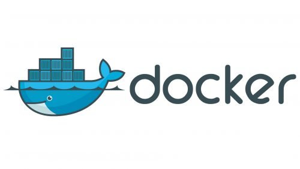

Docker Compose makes containers simple and fun
Posted on June 18, 2025 in Docker
Docker Compose: Making Containers Simple and Fun!

Why Docker Compose?
Docker Compose uses a single file docker-compose.yml to describe how multiple containers should work together. Instead of running lots of complicated Docker commands, you write one file, type docker-compose up, and boom—your app is running! It’s perfect for setting up apps with multiple parts, like a website, a database, and a helper tool, all talking to each other.
Getting Started with Docker Compose
First, you need Docker and Docker Compose installed. On most systems, Docker Desktop includes Compose. Then, you create a docker-compose.yml file to describe your containers.
My Docker Hub repository at https://hub.docker.com/u/craigderington.
Example 1: A Simple Python Web App
Python web app using craigderington/flaskdock:latest.
You want it to run with a web server. Here’s a docker-compose.yml to set it up:
version: '3.8'
services:
python-app:
image: craigderington/docker-python
ports:
- "5000:5000"
volumes:
- ./app:/app
environment:
- FLASK_ENV=development
What’s happening?
-
Toy box: A container running your craigderington/docker-python image.
-
Ports: Connects port 5000 on your computer to port 5000 in the container, so you can visit your app in a browser.
-
Volumes: Shares your local app folder with the container, so your code updates instantly.
-
Environment: Tells the app it’s in “development” mode.
Run it with:
docker-compose up
Visit http://localhost:5000 to view the app.
Example 2: Node.js App with Nginx
Node and nginx images are perfect for a Node.js app with a web server. Let’s make them team up:
version: '3.8'
services:
node-app:
image: node:current-alpine3.22
ports:
- "3000:3000"
volumes:
- ./node-app:/app
environment:
- NODE_ENV=production
nginx:
image: nginx:stable-perl
ports:
- "80:80"
depends_on:
- node-app
volumes:
- ./nginx.conf:/etc/nginx/nginx.conf
Example 3: Python App with Database
Let’s combine your craigderington/docker-python with a PostgreSQL database for a full-stack app:
version: '3.8'
services:
python-app:
image: craigderington/docker-python
ports:
- "5000:5000"
environment:
- DATABASE_URL=postgres://user:password@db:5432/mydb
depends_on:
- db
db:
image: postgres:latest
environment:
- POSTGRES_USER=user
- POSTGRES_PASSWORD=password
- POSTGRES_DB=mydb
volumes:
- db-data:/var/lib/postgresql/data
volumes:
db-data:
Why Docker Compose is Awesome
Docker Compose is like a magic wand for your containers. Instead of juggling multiple docker run commands, you write one file, and Compose handles the rest. It’s perfect for:
- Testing: Spin up a whole app (web, database, etc.) in seconds.
- Development: Share your docker-compose.yml with teammates for consistent setups.
- Learning: Play with different images without breaking anything.
To stop your containers:
docker-compose down
To remove containers and volumes:
docker-compose down -v
Portainer to Manage the Fleet
Launch a portainer agent:
docker run -d \
-p 9001:9001 \
--name portainer_agent \
--restart=always \
-v /var/run/docker.sock:/var/run/docker.sock \
-v /var/lib/docker/volumes:/var/lib/docker/volumes \
-v /:/host \
portainer/agent:2.27.6